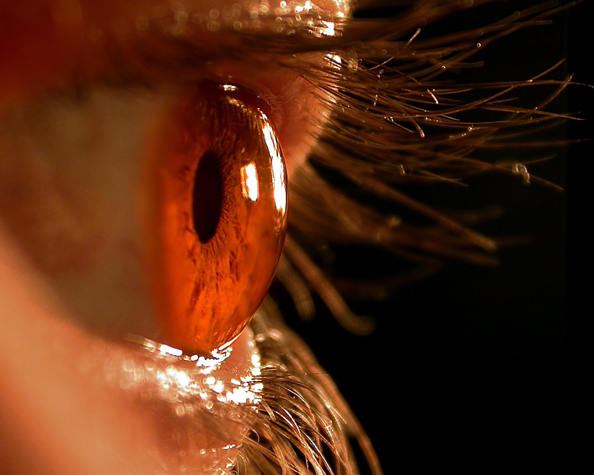

Photoreceptor Stem Cells
Repairing blindness
Michelle Qi
Fall 2007

Could restoring lost or deteriorated vision be one of the miracles made
possible by modern science? According to recent studies in both
the United Kingdom and the United States, the transplantation of
photoreceptor stem cells into the retina could make this apparent dream
a reality. Yet, this idea is by no means new. In fact, the theoretical
basis for this procedure has been in the works since the early 1990s,
but not until recently has technology caught up with scientific vision.
Preliminary studies were led by Robert Ali, PhD, and
Jane Sowden, MD, at the Moorfields Eye Hospital in London and the
University College London Institutes of Opthamology and Child Health.
The researchers obtained photoreceptor stem cells from the
still-forming retinas of newborn mice and injected them into the
disintegrated retinas of mice genetically engineered to have
age-related vision deterioration.
The results, published in the November 2006 issue of
Nature, were surprising considering that the retina was previously
thought to be incapable of regeneration and repair. The implanted cells
connected successfully to pre-existing retinal neurons, allowing the
mice’s pupils to become responsive to light and restoring significant
amounts of activity in their optic nerves.
But could these results be reproduced in humans?
Enter Mike May, a Californian who was blinded in a childhood accident
and has been living for 40 years with only a minimal ability to
perceive light. In 1999, May underwent corneal and limbal stem cell
implantation at St. Mary’s Hospital in San Francisco and began
follow-up studies with University of California, San Diego research
psychologists Ione Fine, PhD, and Don MacLeod, PhD. Two years later, as
reported in the August 2003 issue of Nature Neuroscience, May could
make out shapes, forms, colors as well as distinguish between male and
female faces seventy percent of the time.
Notably, the results of May’s treatment and those of
the mice trials differ in that May suffered physical damage to the
exterior portion of his eye and not to his retina. Regardless, May’s
recovery provides hope that stem cell-based therapies can also be
applied to retinal disorders such as macular degeneration and retinitis
pigmentosa, and the promising results of the mice trials indicate that
a cure for blindness is in sight.
About the Author
Michelle Qi is a third year Integrative Biology major.